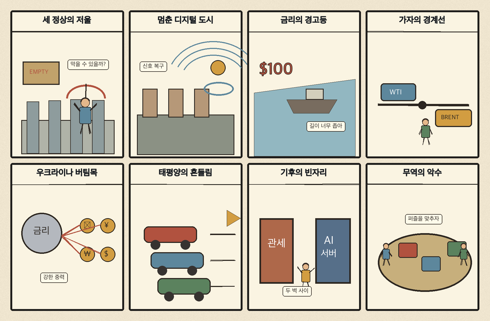
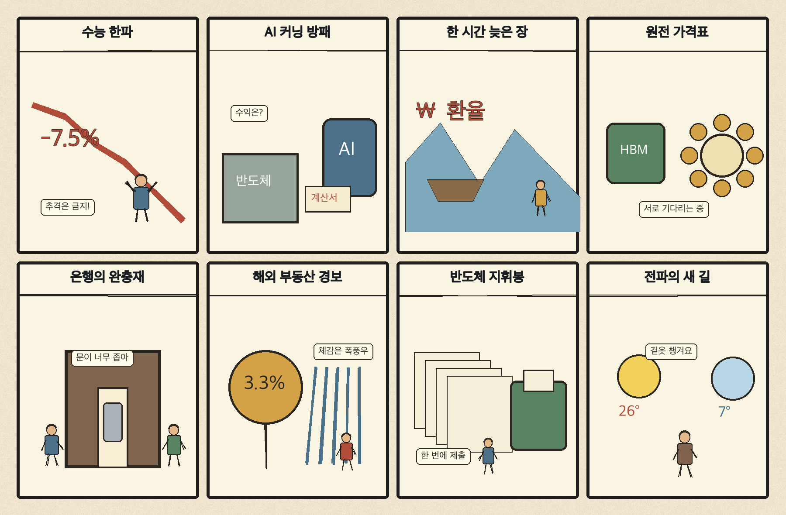

01
유나이티드헬스 · 387.14→365.71달러 · -5.53%
내용요약 시가 대비 -5.53%로 조사군 최하위였습니다.
예상여파 대형 헬스케어의 약세가 다우와 방어주 심리에 부담을 줄 수 있습니다.
MORNING_BRIEFING_20261119
작성 시각: 2026-11-19 06:36 KST · 직전 미국 정규장과 2026-11-19 KST 당일 공개 기사 기준
11월 18일 뉴욕증시는 다우 -1.11%, S&P 500 -0.23%, 나스닥 +0.42%로 혼조 마감했습니다. 엔비디아가 시가 대비 -4.00%로 밀렸고 연준의 추가 금리 인상 발언이 부담이었습니다. 전날 KOSPI는 +1.99% 반등했지만 시가 대비로는 -0.62%여서 장중 매물 압력도 확인됐습니다. 오늘은 수능일로 국내 증시가 오전 10시에 개장합니다.
| 지수 | 종가 | 등락률 | 한국 증시 시사점 |
|---|---|---|---|
| 다우존스 | 50,198.17 | -1.11% | 경기민감주 부담 |
| S&P 500 | 7,323.63 | -0.23% | 대형주 보합권 |
| 나스닥 종합 | 24,429.89 | +0.42% | 기술주 선택적 반등 |
지수는 올랐지만 AI 반도체 내부 차별화가 컸습니다.
전일 +1.99% 반등했으나 시가보다 낮게 마쳤습니다.
호실적 소화 뒤 차익실현으로 국내 HBM 변동성이 커질 수 있습니다.
수능일 거래시간 변경과 초반 유동성 왜곡을 유의합니다.
11월 18일 보고서는 점수·확률·손익비와 30건 이상 유사 조건 표본을 모두 검증한 후보가 없어 공식 추천을 내지 않았습니다. 사후 종목을 추가하지 않습니다.
| 시장 | 종가 | 등락률 | 기준 |
|---|---|---|---|
| KOSPI | 5,067.44 | +1.99% | 11월 18일 · 시가 대비 -0.62% |
| KOSDAQ | 662.81 | +1.96% | 11월 18일 · 시가 대비 -0.32% |
| 다우존스 | 50,198.17 | -1.11% | 미국 11월 18일 정규장 |
| S&P 500 | 7,323.63 | -0.23% | 미국 11월 18일 정규장 |
| 나스닥 종합 | 24,429.89 | +0.42% | 미국 11월 18일 정규장 |
크라우드스트라이크가 시가 대비 +3.33% 상승했습니다.
스포티파이 +1.60%, 아마존 +1.09%로 방어했습니다.
유나이티드헬스가 시가 대비 -5.53%로 조사군 최하위였습니다.
마벨 -4.66%, 엔비디아 -4.00%로 차익실현이 나타났습니다.
내용요약 시가 대비 -5.53%로 조사군 최하위였습니다.
예상여파 대형 헬스케어의 약세가 다우와 방어주 심리에 부담을 줄 수 있습니다.
내용요약 시가 대비 -4.66%로 하락했습니다.
예상여파 AI 네트워크·반도체 기대의 차익실현과 변동성 확대를 보여줍니다.
내용요약 시가 대비 -4.00%로 밀렸습니다.
예상여파 호실적 이후에도 밸류에이션과 규제 불확실성이 국내 HBM 심리를 흔들 수 있습니다.
내용요약 시가 대비 +3.33%로 조사군 최상위였습니다.
예상여파 미국 전산 장애 이슈와 맞물려 사이버보안 수요 기대가 부각될 수 있습니다.
내용요약 시가 대비 +1.60% 상승했습니다.
예상여파 혼조장에서도 구독 플랫폼의 선택적 상대강세가 나타났습니다.
나스닥은 올랐지만 엔비디아와 마벨이 큰 폭으로 하락해 국내 HBM·반도체의 단순 강세 연결은 어렵습니다. KOSPI는 전날 5,000선을 회복했으나 시가 대비 음봉이었고, 연준의 추가 인상 언급은 원화와 외국인 수급에 부담입니다. 수능일 오전 10시 개장 뒤 외국인 현·선물 동시 순매수와 KOSPI 5,067선 유지 여부를 확인하기 전까지 추격매수를 피합니다.
오늘은 추천 없음 — 현금 관망
미국 지수 혼조와 AI 반도체 약세, 국내 수능일 지연 개장으로 초기 유동성 왜곡 가능성이 있습니다. 개장 전 당일 시가·실시간 수급과 30건 이상 유사 조건 표본을 확보하지 못해 종합점수 75점·상승확률 60%·예상 손익비 1.5를 모두 검증한 후보가 없습니다.
관심 연결종목 사이버보안·원전·AI 게임은 관찰 대상일 뿐 매수 추천이 아닙니다. 오전 10시 개장 직후 급등 종목의 추격매수를 금지합니다.
수능일 거래시간 변경과 초반 호가 공백을 확인합니다.
국내 HBM 대형주의 실적 기대와 차익실현 균형을 봅니다.
무역·안보·우크라이나 관련 공동 메시지를 점검합니다.
원달러 환율과 외국인 선물 수급 반응을 확인합니다.
핵심 요약: 앤트로픽의 대형 기업공개, 미국 전산 인프라의 AI 개편론, 지스타의 게임·AI 융합이 AI 산업의 자금·인프라·콘텐츠 축을 동시에 보여줍니다. 삼성전자 리더십과 주파수 제도 변화도 국내 기술 생태계의 핵심 변수입니다.
내용요약 앤트로픽이 주당 83달러로 공모가를 정해 대규모 자금 조달에 나선다는 소식입니다.
예상여파 생성형 AI 기업의 높은 가치평가 기대가 이어지지만 상장 뒤 매출 성장과 비용 구조 검증도 더 엄격해질 수 있습니다.
내용요약 미국의 연쇄 전산 장애 뒤 마이크로소프트 부사장이 노후 시스템을 AI로 개편해야 한다고 제안했습니다.
예상여파 공공·금융 인프라 현대화 수요가 커지는 동시에 AI 전환 과정의 안정성과 보안 책임도 중요해집니다.
내용요약 국내 최대 게임쇼 지스타가 게임과 AI의 융합을 주요 화두로 개막합니다.
예상여파 생성형 콘텐츠와 지능형 캐릭터가 게임 제작비와 이용 경험을 바꾸며 관련 플랫폼 경쟁을 촉진할 수 있습니다.
내용요약 삼성전자가 메모리와 스마트폰 부문의 리더십 보강을 포함한 사장단 인사를 준비한다는 보도입니다.
예상여파 AI 메모리와 모바일 경쟁력 회복을 위한 조직 변화가 투자·제품 로드맵의 속도에 영향을 줄 수 있습니다.
내용요약 AI 시대의 주파수 부족을 공동사용과 2차 거래로 풀자는 논의가 부상했습니다.
예상여파 AI 기기·로봇·위성 통신 확산에 필요한 전파 자원의 효율적 배분이 산업 성장의 기반이 될 수 있습니다.
핵심 요약: 미·중·러 3자회담과 유럽의 우크라이나 지원이 국제질서의 방향을 가를 전망입니다. 미국의 전산 장애와 금리 인상 경고, 가자 지상전 확대는 시장과 안보의 하방 위험을 높입니다.
내용요약 미국·중국·러시아 정상이 선전에서 사상 첫 3자회담을 열 예정이라는 보도입니다.
예상여파 무역·안보·우크라이나 의제가 동시에 다뤄지면 세계 공급망과 한반도 외교에 큰 방향 신호가 될 수 있습니다.
내용요약 미국의 잇단 시스템 장애로 일부 지역에서 불안과 사재기 조짐이 나타났다는 보도입니다.
예상여파 디지털 공공 인프라의 복원력과 사이버·클라우드 투자 필요성이 다시 부각될 수 있습니다.
내용요약 미 연준 내부에서 수개월 내 추가 금리 인상과 0.5%포인트 인상 가능성까지 거론됐습니다.
예상여파 달러와 국채금리 상승 압력이 커지면 글로벌 성장주와 신흥국 자금 흐름에 부담이 될 수 있습니다.
내용요약 이스라엘군이 가자지구 지상작전을 확대하고 주민 이동을 요구했다는 속보입니다.
예상여파 중동의 인도주의·안보 위험이 커지며 국제유가와 안전자산 변동성이 확대될 수 있습니다.
내용요약 유럽연합이 우크라이나에 65조원 규모의 신규 대출을 제안했습니다.
예상여파 전쟁 장기화 속 유럽의 재정 부담과 방산·에너지 정책 재편이 이어질 수 있습니다.

핵심 요약: 수능과 AI 부정행위 대응으로 교육·교통·증시 운영이 조정됩니다. 원전 가격제도 개편은 에너지 시장의 예측 가능성을 높이는 한편 은행 부실채권과 해외 부동산 위험은 금융권의 완충력을 시험합니다.
내용요약 AI 부정행위 우려 속 전국 55만 수험생이 대학수학능력시험을 치릅니다.
예상여파 감독 강화와 기기 통제가 시험 공정성의 핵심이 되며 교육 현장의 AI 활용 기준 논의를 촉진할 수 있습니다.
내용요약 수능일 교통 여건을 고려해 국내 주식시장이 오전 10시에 개장하고 오후 4시 30분에 종료됩니다.
예상여파 평소와 다른 거래시간 때문에 장 초반 유동성과 주문 시각을 착각하지 않도록 주의해야 합니다.
내용요약 내년부터 원전 전력가격을 미리 정하고 차이를 사후 정산하는 차액계약이 도입됩니다.
예상여파 원전 수익의 예측 가능성과 한전의 비용 관리가 개선될 수 있지만 계약가격 산정의 투명성이 중요합니다.
내용요약 4대 은행의 고정이하여신이 23% 늘어난 데 비해 대손충당금 증가는 2%에 그쳤다는 집계입니다.
예상여파 경기 둔화 시 은행의 손실흡수력과 충당금 추가 적립 부담을 점검할 필요가 있습니다.
내용요약 금융사의 해외 부동산 부실우려 자산이 2조6천억원대로 늘었습니다.
예상여파 상업용 부동산 가격과 환율·금리 변화가 금융사 건전성에 추가 부담을 줄 수 있습니다.
